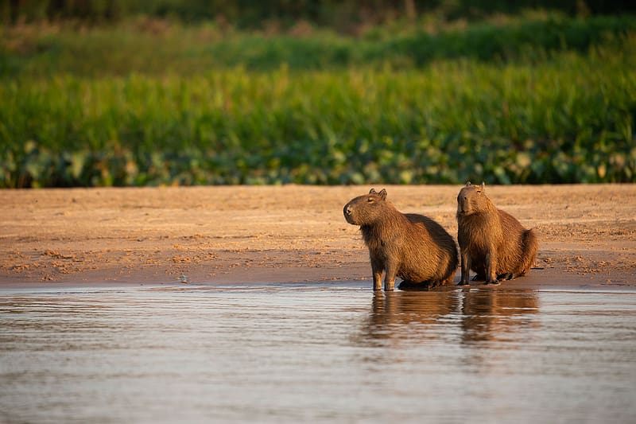

LOS CAPYBARAS
LOS ROEDORES MÁS GRANDES DEL MUNDO
Las curiosas capibaras encabezan, junto con la rata topo gigante, la lista de los roedores
más grandes del mundo. He aquí otras curiosidades de estos animales habituados a vivir en el agua.
SU CUERPO ESTÁ COMPLETAMENTE ADAPTADO AL MEDIO ACUÁTICO
Las capibaras viven junto a ríos y humedales, por lo que su cuerpo está perfectamente adaptado a la
vida acuática. De hecho, dependen del agua para sobrevivir. Así, por ejemplo, tienen unos pies palmeados,
con unas patas traseras dotadas de una membrana interdigital que les ayuda a nadar con facilidad. Además,
tienen un pelaje denso y resistente al agua que les sirve para mantener la temperatura corporal y a
desplazarse con facilidad. La colocación de sus ojos, en la parte alta de la cabeza, les es de gran ayuda
a la hora de desplazarse por el agua, pues pueden ver, e incluso respirar, cómodamente mientras nadan.
SUS AFILADOS DIENTES INCISIVOS SIEMPRE CRECEN
Se alimentan principalmente de hierbas y plantas acuáticas, y, ocasionalmente, de cortezas y frutos.
Tienen unos dientes prominentes y afilados que pueden causar daño si se sienten amenazadas. Sus incisivos
no paran de crecer, y se van desgastando a lo largo de su vida, como ocurre con muchos roedores.
TIENEN UN PELAJE IMPERMEABLE
El pelaje de las capibaras es impermeable por varios factores. Por un lado, cuentan con unas
glándulas sebáceas que producen una sustancia aceitosa que les ayuda a marcar el territorio y también
para repeler el agua. Por otra parte, sus pelos son densos y gruesos, lo que les permite mantener la
piel seca incluso cuando están sumergidos.
SE REPRODUCEN EN EL AGUA
Las capibaras pasan gran parte de su vida en el agua, incluso copulan. Cuando una hembra entra en
celo, un macho empieza a seguirla de cerca, a veces durante largos periodos de tiempo, antes de que
se produzca el apareamiento. La cópula suele durar solo unos segundos, pero una hembra suele hacerlo
varias veces por periodo de celo. Las crías nacen a los 150 días, en camadas de entre 2 y 8 individuos.
Se destetan a los 3 meses, durante los cuales maman tanto de su propia madre como de las otras hembras
del grupo, que suelen estar estrechamente emparentadas.
SON ANIMALES GREGARIOS Y SOCIALES
A las capibaras les gusta vivir en comunidad. Generalmente, se agrupan en comunidades de unos 10 individuos,
aunque durante la estación seca pueden formar comunidades de hasta 100 ejemplares. Son animales crepusculares,
con lo que están más activos durante la salida o la puesta del sol, aunque si se sienten amenazados pueden
permanecer despiertos durante toda la noche.
EMITEN UNA GRAN VARIEDAD DE VOCALIZACIONES
Una de las características más destacables de las capibaras es que son capaces de emitir una gran
variedad de vocalizaciones. Se desconoce su finalidad, pero se sabe, por ejemplo, que son muy frecuentes
entre los ejemplares más jóvenes. A veces las capibaras se confunden con animales domésticos. Por ejemplo,
algunos ejemplares reproducen una especie de ladrido para advertir del peligro.